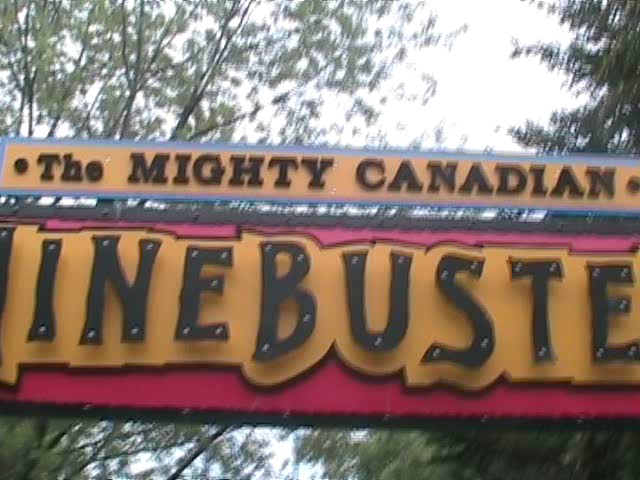

| |
Mighty Canadian Minebuster Review

We're here at Canada's Wonderland and todays ride we'll be reviewing is the Mighty Canadian Minebuster. Once you get in the cars and pull down the lap bars and buckle the seatbelt, you're on your way. After a brief turn out of the station, we start climbing the lifthill. While climbing the lifthill, you get a really nice view of Behemoth. After quickly realizing that you need to go ride Behemoth some more after this ride, we crest the lifthill and turn to the right. We then get a good look at one of the slides from the waterpark as it snakes over the coaster. But before you can say anything else, you head on down the first drop. We gain some good speed. It's a little rattly, but nothing bad. Then we shred through a small hill right under the water slide. While there's no airtime, it is cool to be under a waterslide. Maybe someday, I'll go on that waterslide. Then I'll be able to say "HEY DUDES!!! I'M ABOVE THE MIGHTY CANADIAN MINEBUSTER!!!! NOT LOOKING SO MIGHTY NOW!!!!!!" Then you go up another hill which provides a good headchopper since you are under the waterslide. As you crest the hill, you are no longer under the waterslide, and as we dip back down, we dip under what I'm assuming is a path in the waterpark. You know, next time I'm at Canada's Wonderland, I'll have to go into the water park so I can get some really cool Mighty Canadian Minebuster Shots. You then rise up a big hill, and whala!!! We're now in a turnaround. So far, nothing interesting has happened. But at least we're not getting our asses kicked like on Wild Beast on the other side of the park. We then dip back under the water park path and roar up a slight incline turnish sort of ride so we don't hit the waterslides. We then roar straight into another bunny hop. And just like the other bunny hops on this ride, there's no airtime. But at least it's cool to be under the water slides again. After another small bump, we then head straight into some straight track. We don't really know what exactly is going on, but at least we get a good view of Behemoth, which we really wish we were on right now. After some straight track going under the Mighty Canadain Minebuster, we start to head into an upward helix. This comes as a great shock to us as we thought the whole ride would be nothing but crappy hills in cool places. But now we get a crappy helix as well!!! YAY!!!!!! =) Seriously though, this helix sucks, it's not that forceful and it's pretty shaky. The helix then heads into a tunnel, so you must all shout "TAKE THE TUNNEL!!!!!!" After taking the tunnel, you keep turning until you turn straight into the brake run covered by a Canadian shed. This is a crappy wooden coaster that's not that fun. But sadly, it's the best wooden coaster in the park because the other woodies are either kiddy coasters, or giant peices of sh*t designed to kill you. I'd recommend riding for the credit and for the sake of going under some waterslides. But really, this ride is nothing special. Then again, most of the rides here aren't.
6/10
Location: Canada's Wonderland
Opened: 1981
Built by: Philadelphia Toboggan Coasters
Last Ridden: August 7, 2008
Mighty Canadian Minebuster Photos

Home
|